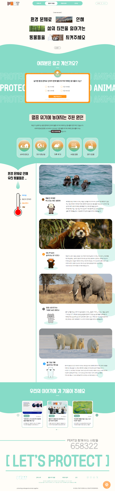
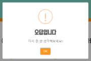
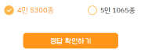
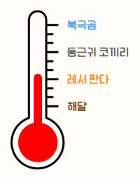
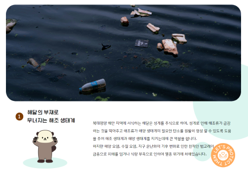

MAIN PAGE
로고와 네비게이션
환경 문제로 인해 멸종 위기에 처해진 4마리의 동물을 모티브로 로고를 디자인하였다. 서브 메뉴 없이 메인 메뉴 클릭 시 해당 페이지로 이동하고, 로그인 및 후원하기 호버시 색상이 진해진다.
사용자의 호기심을 자극하는 퀴즈
사용자가 환경 문제로 인한 멸종 위기 동물의 심각성에 대해 생각해볼 수 있도록 유도하고자 퀴즈 형식으로 디자인하였다.
-
[ 오답일 경우 ]
마우스를 갖다 대면 양쪽으로 글자가 흔들리며, 클릭 시에
알림창이 뜬다. -
[ 정답일 경우 ]
마우스를 갖다 대면 글자색이 변하며 살짝 커진다.
'정답 확인하기' 를 누르면 다음 섹션으로 자동 스크롤 된다.
퀴즈 정답 및 주된 환경 문제 설명
위 퀴즈에 대한 정답을 알려주며, 어떤 문제로 인해 멸종 위기에 처해지게 되는지 아이콘과 함께 알려준다.
멸종 위기 동물에 대한 정보
멸종 위기에 처해진 동물 중 4종을 선정하여, 해당 동물이 멸종 위기에 처한 이유를 다양한 동적 요소를 더해 알려준다.
- 왼쪽 부분 고정, 오른쪽 동물 설명 부분은 4섹션으로 나누어 보여준다.
- 공통적으로 문제가 되는 지구온난화를 온도계로 표현하여 기온 상승으로 인해 많은 피해를 보는 순으로 하였고, 동물 이름을 클릭하거나 스크롤 되었을
때 해당 섹션의 동물에 맞춰 온도계의 높이가
달라진다.

- 이미지에 마우스를 갖다 댔을 때, 환경 문제로 인해 피해 입은 서식지의 이미지로 바뀐다.

언론 매체의 관련 기사
환경 문제나 멸종 위기 동물과 관련된 기사를 슬라이드 형식으로나열하였다.
단체 정보와 후원 문구 버튼
단체와 함께하는 후원자 수와 단체 정보를 간략하게 기입하였고, 오른쪽 하단에 후원 문구 버튼을 클릭하면 후원과 참여 페이지로 이동한다.